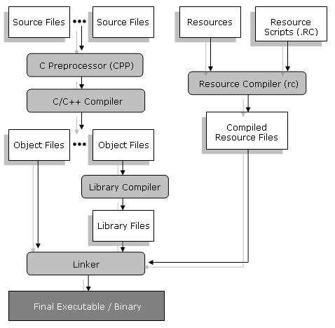
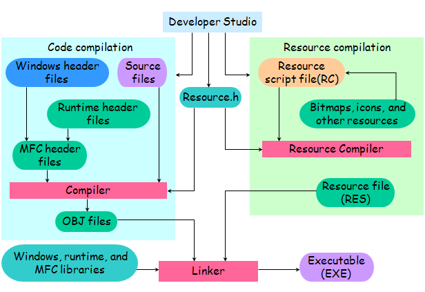

목차
선언, 정의, Preprocessor 로 구성
정의
전처리기
# 으로 시작되는 행에 대하여 컴파일러가 가동되기 전에 행하는 처리과정


| C 의 표현 | C++ 의 표현 |
|---|---|
| #include <stdio.h> int main(void) { float kor, mat, eng, aver; char name [20]; printf("Enter a name : "); scanf("%s", name); printf("Enter Scores : "); scanf("%f%f%f", &kor, &mat, &eng); aver = (kor + mat + eng) / 3.0; printf ("Name : %s\nAverage : %f", name, aver); } |
#include <iostream> using namespace std; int main(void) { char name [20]; cout << "Enter a name : "; cin >> name; float kor, mat, eng, aver; cout << "Enter Scores : "; cin >> kor >> mat >> eng; aver = (kor + mat + eng) / 3.0; cout << "Name : " << name << "\nAverage : " << aver; } |
본인의 이름과 나이를 받아들여 한 줄에 출력하는 프로그램을 작성하라.